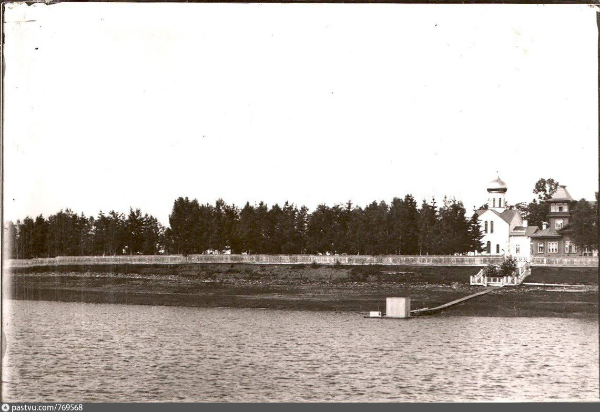
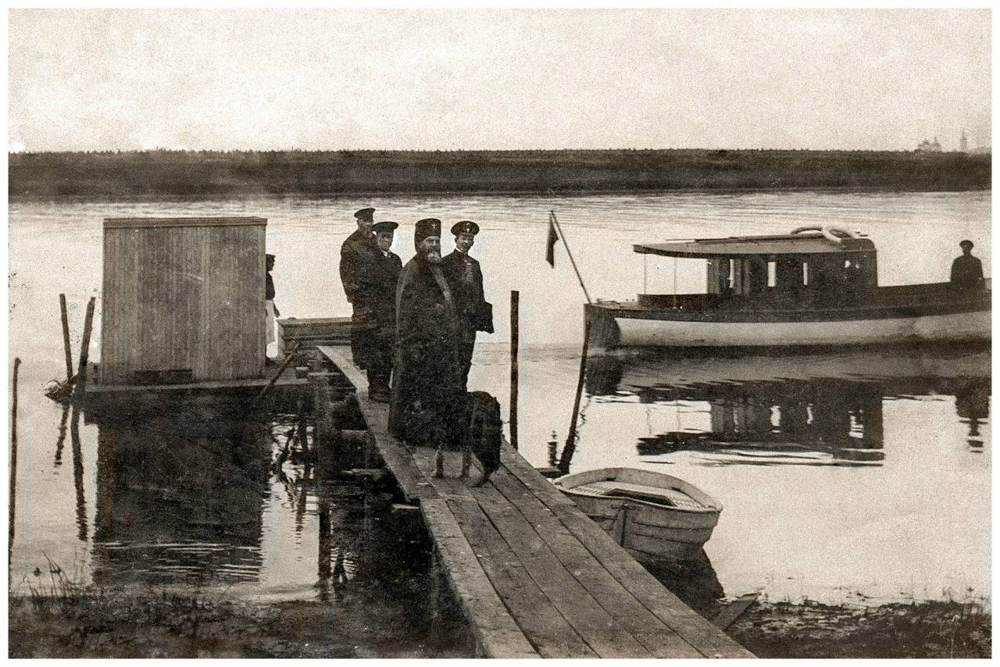

Общие сведения
Когда то давным давно...в Новгороде в 10 веке лютый движ: Архиепископ Иоаким приезжает, бьет топором по Перуну (языческий идол), рвёт жертвоприношения, связывает ужиком и волочит по грязи в Волхов. Перун орёт как свинья: "Ох бл, немилостивые рученьки достались!" — кидают в реку, он плывёт под мостом, швыряет свою палицу, и монахи запрещают поднимать. Горшечник-пидеблянич (житель Питьбы, гончар с керамикой) чёсами идёт на реку за горшками в город. Видит — Перун припёрся к берегу, мокрый черт. Тот шестовой: "Ты, Перушище, нажрался-нахлебался досыта, а теперь вали нахер поплавок!" — и отпихнул шестом обратно в Волхов. Перун уплыл "осенней мухой". После того как пидеблянич пнул Перуна шестом в Волхов ("Плыви, алкаш, нажрался досыта!"), выясняется: чел — местный гончар-бизнесмен из древней керамической помойки у реки Питьбы. Там с X века жгли горшки как не в себя. |
Подпись к фото 1 |
|
Подпись к фото 2 |
Что было дальше?Строгие новгородские архиереи, уставшие от соборов и казней еретиков, сваливают на лето в Устье — "Архиерейский домик у речки". Горшки предков (пидеблянич legacy) эволюционировали в фруктовые сады и пруд (1784: выкопали, яблоки/груши шлют в епископский стол). Архиерей в рясах жрёт ананасы из местных (ну или вишни), попивая квас из древней керамики, а крестьяне в 19 душах (1907) пашут: "Ваше преосвященство, Перун уплыл, но яблоки спелые!" Вот как тогда скорее всего проходил день в мызе: Утро архиерея: Просыпается в хате из бревен (лучше, чем у крестьян с 19 душами), жрёт свежие яблоки из садов 1784-го (высадили специально, чтоб фрукты в Новгород катить бочками). Квас из пидеблянич-горшков (legacy X века) — как энергетик для проповедей: "Братья, Перун уплыл, а яблочко спелое!" День на релаксе: Копают пруд для форели (типа, "святой бассейн"), сажают вишни/груши — ферма уровня царя. Крестьяне пашут: "Ваше преосвященство, Перун шестом не нужен, вот сливы!" Архиерей кивает, попивая медовуху: "Грех? Нет, это благословение Волхова!" Вечерний понт: Собрание с виночерпиями — травят байки про то, как предки идолов топили. Один архиерей такой: "Я вчера в пруду окунулся — чище Перуна стал!" Другие ржут: "А мы думали, ты молиться пошёл!" Секретный лайфхак: Тайком жарят шашлык из зайца (не по уставу, но "для здоровья"), а горшки пидеблянича юзают как шоты. Гламур без Instagram короче |
Мыза АрсенияАрсений (Стадницкий) — новгородский архиепископ 1910-х, который с 5 ноября 1910 года рулил епархией и превратил Устье в русский Эпштейн-Айленд с рясами и моторкой, где попы чилили под видом "духовного ретрита". Типа, строгий борец с хуёвым церковным пением, но на мызе отрывался по полной, апгрейдя XVII-вековую базу в VIP-место с понтами уровня олигарха. База — сады 1784-го с яблоками и грушами в архиерейский стол, пруд для "святой форели", а Арсений докинул экзотику: лиственницы, дубы 100-летки в аллеях, гранитный фонтан — чисто Little St. James с церковью вместо сатанинского храма. По сути этот Сеня стал не только прародителем мемов про Эпштейна, но еще и первым троллером Великого Новгорода, и почему же? Его троллинг - моторный катер "Перун", купленный для понтов. 1000 лет назад предки топили идола шестом, а он на нём по Волхову ревет, гоняя виночерпиев и послушников, попивая квас из пидеблянич-горшков. Историк Порфиридов очень сильно удивился (о#уел): "Губернаторы на телегах пыхтят, а у попа яхта — такая роскошь, что даже местные элиты ссутся!" Аналогия с Эпштейном полная: приватное место у Волхова, моторка для VIP-гостей, экзотика вокруг — только вместо голливудских проституток архиерейские братки и фрукты вместо кокса. Арсений на "Перуне" катит к мызе с бочкой вина: "Губернатор, соси на своей кобыле — Волхов мой, сады мои, пение моё!" |
 |
 |
Во всем виноваты комунистыкоммуняки в 1920-х ворвались в Устье как терминатор в архиерейский рай и сказали: "Хватит попам на "Перуне" по Волхову понтоваться — пора рабочим рай на земле строить, суки!" Арсений с виночерпиями срочно свалил с экзотическими яблочками и лиственницами, а красные взяли мызу штурмом: парк Арсения в футбольное поле перековыряли (типа, "мяч вместо медовухи"), центральную поляну под школу и детсад заасфальтировали, чтоб малолетки вместо церковных баек учили "Капитал" Маркса. Царский пруд с форелью оставили, но теперь там не шашлыки тайком, а лягушки квакают под гимн СССР. Котельная выросла как гриб после дождя — пар валит, чтоб кирпичный завод (бывший пидеблянич-горшковый) ебашил не горшки, а кирпичи для социализма по полной, апгрейд до посёлка Кирпичного завода №3. ПТУ натаскали для пацанов — "учись, стань стахановцем, а не попом на моторке!". К 1965-му переименовали в Волховский — 3к жителей жуют щи у фонтана-руин, где раньше архиерей понтовался. Мыза разъебана в хлам: церковь еле дышит, гранитный постамент от фонтана сиротливо торчит, сады за 100 лет в дикую поросль. Коммунисты legacy: "От Эпштейн-Айленда до бараков и котельной — пролетарский реванш Перуна!" Рофл полный — попы на яхте утекли, а рабочие на тракторах въехали. Теперь там футболасты и садик, где дети рисуют Ленина вместо идолов. |
|